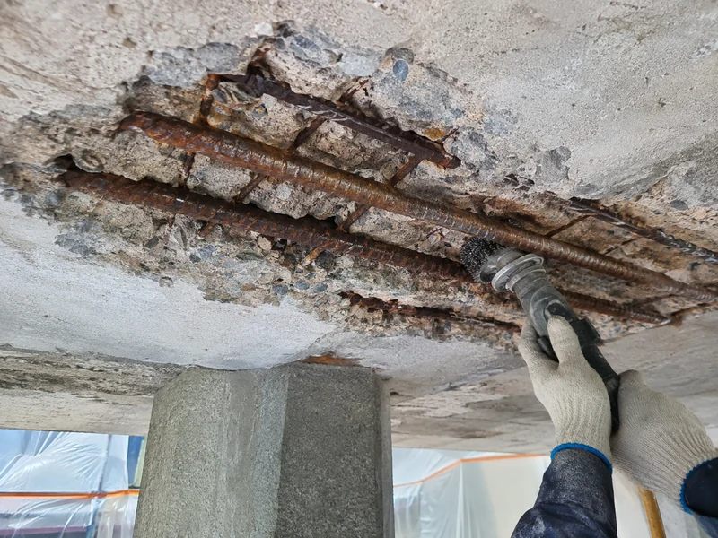

ARCHIVE
철근부식 및 콘크리트 박락 보수공법 — 녹 제거·방청부터 단면복구까지
철근부식과 콘크리트 박락은 떨어진 부분을 몰탈로 메우는 것으로 끝나지 않습니다. 탄산화·염화물·누수 등 원인을 확인하고, 열화 콘크리트 제거와 철근 처리, 단면복구까지 이어지는 기본 보수공정을 정리했습니다.

핵심 원칙 — 철근이 녹았다는 이유만으로 녹 제거와 방청처리만 시행해서는 안 됩니다. 철근부식은 결과이며, 탄산화·염화물 침투·누수와 습윤·피복 부족 등 원인을 먼저 확인한 뒤 보수범위와 공법을 결정합니다.
1. 개요
철근콘크리트 구조물에서 균열과 박락이 발생하고 내부 철근이 부식된 경우, 떨어진 콘크리트만 보수몰탈로 메우는 것으로 보수를 끝내서는 안 됩니다.
철근이 부식하면 부식생성물의 팽창으로 철근 주변 콘크리트에 균열, 들뜸, 박락이 발생할 수 있습니다. 따라서 보수의 핵심은 다음 세 가지입니다.
- 부식의 원인과 진행 범위를 확인한다
- 열화 콘크리트와 부식 철근을 적절히 처리한다
- 손실된 단면과 철근 주변의 보호환경을 복구한다
2. 기본 보수공정
- 손상조사 및 타진
- 열화·들뜬 콘크리트 제거
- 철근 주변 노출 및 바탕정리
- 철근의 느슨한 녹·스케일 물리적 제거
- 필요 시 잔존 녹 전환 및 방청처리
- 폴리머 시멘트계 등 적합한 보수몰탈로 단면복구
- 양생
- 필요 시 표면보호
각 단계는 독립된 작업이 아니라 하나의 보수 시스템으로 판단합니다.
3. 손상조사와 보수범위 결정
먼저 육안조사와 타진을 통해 균열, 들뜸, 박락 및 철근부식의 범위를 확인합니다.
철근이 노출된 부분만 보고 보수범위를 결정해서는 안 됩니다. 외관상 건전해 보여도 주변 콘크리트가 철근부식 등의 영향으로 들떠 있을 수 있으므로 타진 등으로 범위를 확인합니다.
현장 조건과 손상 정도에 따라 다음 항목을 추가 검토합니다.
- 균열의 위치·폭·형태와 진행성
- 박락 및 들뜸 범위
- 철근부식 및 단면손실 상태
- 철근 피복두께
- 탄산화 깊이
- 염화물 침투 가능성
- 누수 및 지속적인 습윤 여부
- 구조부재의 변형·처짐 등 이상 유무
철근 단면손실이 크거나 보·기둥·슬래브 등 주요 구조부재의 내력에 영향을 줄 가능성이 있는 경우에는 단순 단면복구로 판단하지 않고 구조검토 필요성을 확인합니다.
4. 열화 콘크리트 제거
들뜨거나 박락된 콘크리트와 부착력이 저하된 부분을 제거합니다.
박락부 표면에 보수몰탈만 덧바르는 방식은 피합니다. 철근 주변까지 부식이 진행된 경우에는 철근 상태를 확인하고 녹 제거·방청·단면복구 작업이 가능하도록 필요한 범위를 확보합니다.
치핑 과정에서는 건전한 콘크리트와 철근을 불필요하게 손상시키지 않도록 합니다.
5. 철근 녹 제거
노출된 철근의 느슨한 녹, 스케일 및 이물질을 와이어브러시나 적절한 전동공구 등을 이용하여 물리적으로 제거합니다.
녹전환제를 사용한다고 해서 녹 제거 공정을 생략하는 것은 아닙니다.
두껍게 형성된 녹층이나 쉽게 떨어지는 부식생성물은 먼저 제거합니다. 이후 적용하는 녹전환·방청재는 제품의 적용조건에 따라 잔존 산화물의 안정화와 재부식 억제를 보조하는 용도로 사용합니다.
철근 단면이 현저히 감소한 경우에는 방청처리만으로 끝내지 않고 철근 보강 또는 구조검토 필요성을 판단합니다.
6. 녹전환 및 방청처리
물리적 녹 제거 후 현장 조건과 적용 제품의 시방에 따라 녹전환·방청처리를 적용할 수 있습니다.
당사 적용 검토 자재로 블랙타스 ACE(녹전환 및 방청처리)를 두고 있으며, 적용 시 제조사의 바탕처리, 도포량, 건조시간 및 후속공정 조건을 따릅니다.
방청재는 철근을 중심으로 적용하고, 보수몰탈이 부착되어야 할 기존 콘크리트 접착면에 불필요하게 묻지 않도록 관리합니다.
블랙타스 ACE는 본 기술자료에서 적용 검토 자재의 예시이며, 현장조건과 제품 기술자료를 확인하여 최종 선정합니다.
7. 보수몰탈을 이용한 단면복구
철근 처리 후 제거된 콘크리트 단면은 현장 조건에 적합한 시멘트계 또는 폴리머 시멘트계 보수몰탈로 복구합니다.
KS F 4042는 콘크리트 구조물 보수용 폴리머 시멘트 모르타르에 관한 국가표준입니다. 보수재 선정 시 단순 압축강도만이 아니라 기존 콘크리트와의 부착성, 사용환경, 시공두께, 내구성 및 현장조건을 함께 검토합니다.
당사 적용 검토 자재로는 MAPEI Planitop CD1이 있습니다. MAPEI 공식 기술자료상 Planitop CD1은 콘크리트 보수용 Repair Mortar로 분류되며, 주요 제원은 다음과 같습니다.
- 포장 — 18 kg
- 배합수 — 18 kg당 약 4~5 L
- 사용가능 온도 — 약 +5℃ ~ +30℃
- 혼합 후 pH — 11.5 초과
- 표준사용량 — 약 1.5 kg/㎡/mm
- 28일 압축강도 — 40 MPa 초과
- 28일 부착강도 — 1.5 MPa 초과
- 여름철 고온에서는 급격한 건조에 의한 표면균열 방지를 위해 습윤양생에 주의
제품의 실제 적용 시에는 최신 제조사 기술자료의 바탕면 처리, 혼합, 시공두께, 양생 및 후속공정 조건을 우선 확인합니다.
8. 단면복구와 철근 주변의 알칼리 환경
건전한 콘크리트 내부의 철근은 시멘트 수화물에 의해 형성되는 높은 알칼리 환경에서 부동태 상태로 보호됩니다.
탄산화가 철근 위치까지 진행되면 철근 주변의 알칼리성이 낮아져 부동태 상태가 깨지고 부식 위험이 증가할 수 있습니다.
열화 콘크리트를 제거하고 철근을 처리한 뒤 시멘트계 보수몰탈로 단면을 복구하면 철근 주변에 다시 알칼리성 시멘트 환경을 형성하는 데 도움이 됩니다.
이는 탄산화된 기존 콘크리트 전체를 대상으로 하는 별도의 전기화학적 재알칼리화 공법과 구분합니다. 일반적인 국부 박락·철근부식 보수에서는 재알칼리화를 일률적인 기본공정으로 두지 않고, 손상원인과 범위에 따라 단면복구 시스템을 선정합니다.
9. 제주지역에서 특히 확인할 사항
제주지역의 철근부식은 탄산화만을 원인으로 판단해서는 안 됩니다.
해안환경에서는 비래염분 등에 의한 염화물 침투가 철근부식에 영향을 줄 수 있으며, 누수·높은 습윤환경·부족한 피복두께 등이 복합적으로 작용할 수도 있습니다. 따라서 철근부식이 확인되면 탄산화 · 염화물 침투 · 누수와 습윤 · 피복두께 부족 · 복합열화 가능성을 함께 검토합니다. 해안지역의 조사 항목은 제주 해안지역 콘크리트 염해와 철근부식 보수에 따로 정리해 두었습니다.
특히 염화물이 철근 주변 콘크리트에 잔존하는 경우에는 박락부만 국부적으로 복구한 뒤 인접부에서 부식이 다시 진행될 가능성도 고려해야 합니다.
따라서 제주지역의 보수재 선정에서는 부착강도와 압축강도뿐 아니라 염화물 침투 저항성, 흡수·투수 특성 등 내구성 관련 성능도 확인할 필요가 있습니다.
10. 구조검토가 필요한 경우
다음과 같은 경우에는 단순 박락보수와 구조보강을 구분하여 판단합니다.
- 철근 단면손실이 큰 경우
- 주요 구조철근의 손상이 의심되는 경우
- 보·기둥·슬래브 등에 구조적 균열이 발생한 경우
- 처짐·변형 등 구조적 이상이 확인되는 경우
- 반복적으로 동일 부위가 균열·박락되는 경우
- 단면복구만으로 요구 성능 회복이 어렵다고 판단되는 경우
구조보강이 필요한 경우 탄소섬유시트, 강판 등 보강공법을 검토할 수 있습니다. 보강량·방향·정착 등은 구조검토와 설계에 의해 결정하며, 시공자가 임의로 정하지 않습니다.
11. 현장 적용 기본 원칙
- 박락부를 메우는 것보다 원인을 먼저 확인한다 — 철근부식은 결과입니다. 탄산화, 염화물, 수분, 피복 부족 등 원인을 먼저 판단합니다.
- 녹전환제는 물리적 녹 제거를 대신하지 않는다 — 느슨한 녹과 스케일을 제거한 후 제품의 시방에 따라 녹전환·방청처리를 적용합니다.
- 보수재는 강도만 보고 선택하지 않는다 — 기존 콘크리트와의 부착성, 시공두께, 환경조건, 수축 및 내구성 등을 함께 검토합니다.
- 제주에서는 염해 가능성을 함께 본다 — 해풍과 비래염분의 영향을 받을 수 있는 현장에서는 탄산화뿐 아니라 염화물에 의한 부식 가능성을 함께 검토합니다.
- 단면복구와 구조보강을 구분한다 — 박락된 콘크리트를 복구하는 것과 구조부재의 내력을 보강하는 것은 목적이 다릅니다. 구조보강이 필요한 경우에는 구조검토와 설계에 따릅니다.
12. 당사 표준공정 후보
- 현장조사·타진
- 손상원인 및 범위 판단
- 열화 콘크리트 제거
- 철근 상태·단면손실 확인
- 느슨한 녹·스케일 물리적 제거
- 필요 시 녹전환·방청처리
- 보수몰탈 단면복구
- 양생
- 필요 시 표면보호
- 구조성능 부족 시 별도 구조보강 검토
13. 적용 기준 및 참고자료
- KS F 4042 콘크리트 구조물 보수용 폴리머 시멘트 모르타르 — 국가기술표준원, 최종개정확인일 2022-08-12
- KS F 2476 폴리머 시멘트 모르타르의 시험방법
- KS F 2711 전기전도도에 의한 콘크리트의 염소이온 침투 저항성 시험방법
- MAPEI Planitop CD1 Technical Data Sheet — 콘크리트 Repair Mortar. 실제 시공 시 최신 제조사 기술자료를 우선 확인합니다.
내부 적용 검토 자재는 블랙타스 ACE(녹전환·방청재)와 MAPEI Planitop CD1(단면복구용 보수몰탈)입니다. 표준의 발행·개정 연도는 확인 시점에 따라 달라질 수 있으므로, 인용할 때는 국가건설기준센터와 e나라 표준인증에서 최신본을 다시 확인합니다.
14. 이 자료의 적용 범위
이 문서는 당사의 현장 보수공법 검토를 위한 기술자료이며, 모든 현장에 동일한 공법을 일률적으로 적용하기 위한 표준시방서는 아닙니다.
실제 공법과 자재는 구조물의 손상원인, 열화범위, 구조적 중요도, 환경조건 및 설계·제조사 시방에 따라 결정합니다. 특히 구조보강이 필요한 경우에는 구조검토 및 설계 결과를 우선합니다. 공법 사이의 판단 순서는 우레탄 · 에폭시 · 탄소섬유 선정 흐름에, 시공 범위는 콘크리트 보수보강에 정리해 두었습니다.